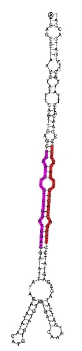
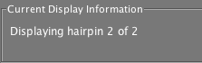
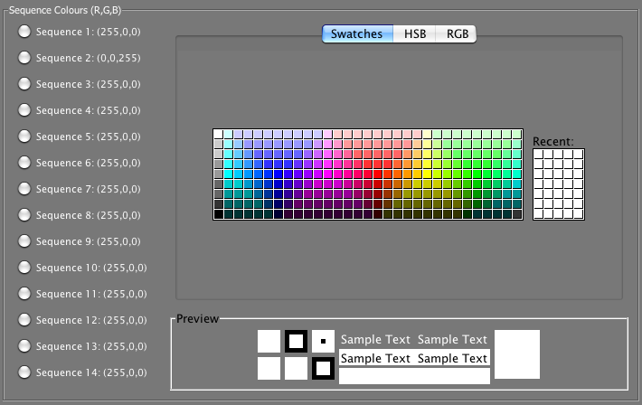

Hairpin Folding and Annotation Tool
This tool produces the secondary structure of a long (up to 1kb) RNA sequence and annotates it by highlighting two short sequences as the miRNA and miRNA* sequence if required.
The tool produces a navigable image showing the position of miRNA candidate sequences on a precursor hairpin (see Figure below).

The tool can produce as many images as required when given a long (hairpin) sequence and optional short sequence(s) in that will be highlighted on the hairpin. These should be subsequences of the hairpin sequence. Each loaded hairpin can then be cycled through using the arrow buttons shown below.
A user can also load FASTA data into the hairpin tool. If the data is formatted in the same style as the output from the miRCat tool, miRNA and miRNA* sequences will be automatically highlighted. See the website for further details.
A user has the option to save the current image or save all of the images loaded into the tool.
A user can also view the information regarding the state of the tool in the top right corner.

Here you can determine how many images are currently loaded and by hovering over the box a tool tip appears describing the hairpin sequence and the short read positions.
Colour of each sequence is controlled using the toggle buttons shown below:

To change the colour of a specific image in the list, select the sequence number and pick the colour from the chooser on the right.